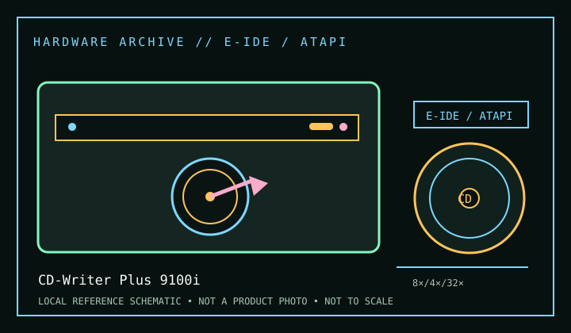

[ CD-R AND CD-RW DRIVES // IDENTIFIED MODEL ]
HP CD-Writer Plus 9100i
Internal IDE/ATAPI recorder in HP’s SureStore/CD-Writer Plus 9100 series: 8× CD-R write, 4× CD-RW rewrite and 32× read. “i” marks the internal model; the 9100e external package is not the same host connection.

IDENTIFICATION: Confirm the manufacturer label, complete model suffix, interface and firmware revision against the cited manual before installation or archival use. Ratings are maximums; actual performance depends on media, mode, host and software.
Documented specifications
| Subcategory | CD-R and CD-RW drives |
|---|---|
| Exact model | CD-Writer Plus 9100i |
| CD-R write | 8× |
| CD-RW rewrite | 4× |
| CD-ROM / CD read | 32× |
| Recorded/read formats | CD-R and CD-RW recording; CD-ROM, CD-DA and supported multisession/data CD reading as described in the HP user guide. Packet-written media depends on DirectCD/UDF software and the matching reader support. |
| Recording modes | Disc-at-Once, Track-at-Once, multisession and packet-writing workflows are tied to the bundled Easy CD Creator/DirectCD generation. Verify compatibility and disc finalization for the intended host. |
| Interface / mechanics | Internal IDE/ATAPI, 5.25-inch half-height. Use the HP installation instructions for cabling, jumper position and the required host-side driver/software. |
| Host and operating-system compatibility | HP’s bundled applications/drivers were made for supported legacy Windows releases; check the archived guide and software release notes before using another OS. Use an ATAPI-compatible controller. A modern adapter may permit reads but not preserve software features or recording commands. |
| Firmware / revision notes | Maintain the 9100i-specific firmware and software pairing. Do not flash a 9100e/external image or OEM variant on the basis of a shared series name. The HP manual and unit product label take precedence over generic 9100-series descriptions. |
Compatibility & preservation notes
- HP’s bundled applications/drivers were made for supported legacy Windows releases; check the archived guide and software release notes before using another OS. Use an ATAPI-compatible controller. A modern adapter may permit reads but not preserve software features or recording commands.
- Maintain the 9100i-specific firmware and software pairing. Do not flash a 9100e/external image or OEM variant on the basis of a shared series name. The HP manual and unit product label take precedence over generic 9100-series descriptions.
- For an imaging or recording session, log the exact drive and firmware, interface/controller, operating system, application version, media identifier, selected mode and any read/verification errors. Keep checksummed image copies and logs.
- Handle discs at the edge or center hole and store in cases in a cool, dry place away from direct sunlight. Avoid adhesive labels, abrasive cleaning and undocumented solvents or polishing.
Read support is not write support. A format listed for this drive does not guarantee every disc revision or copy-protection scheme will work.
Sources
- HP SureStore CD-Writer Plus user guide, HP manual archiveHP-hosted archived manual for the 9100 family; check model-specific applicability and compatibility tables.
- HP CD-Writer Plus user manual, ManualsLib archiveScanned manual copy covering installation and legacy software; verify it applies to the 9100i variant.
- HP 9100-series installation media, Internet ArchiveArchived software/media image record useful for matching period installation utilities; not a substitute for the exact manual.